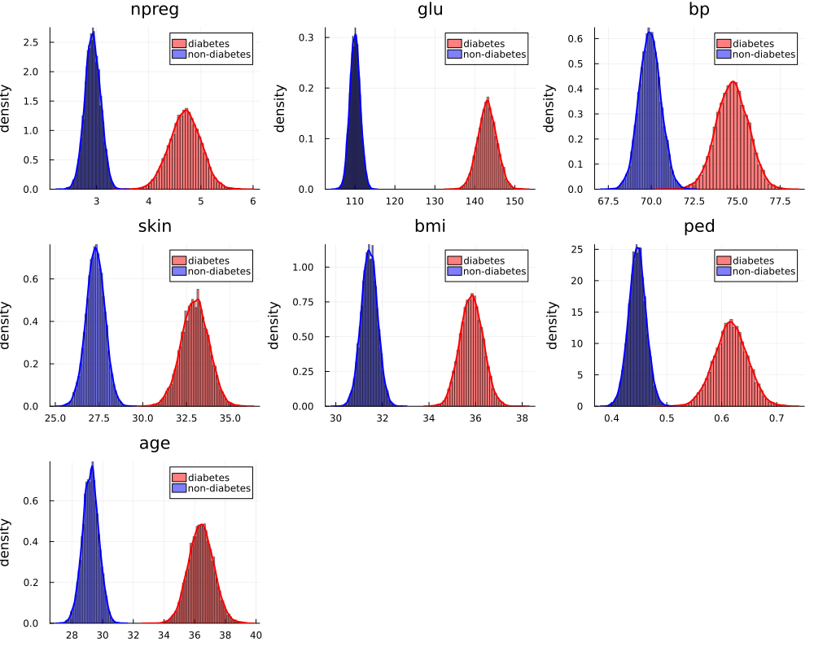
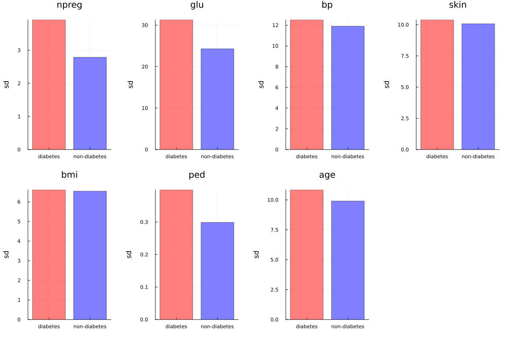
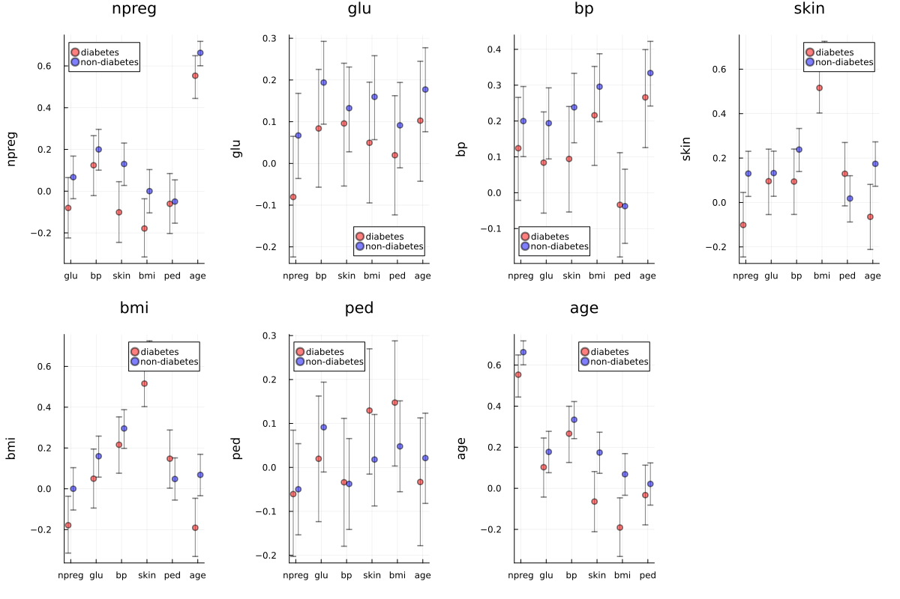

Exercise 7.6 Solution Example - Hoff, A First Course in Bayesian Statistical Methods
標準ベイズ統計学 演習問題 7.6 解答例
Table of Contents
a)
Answer
preprocess & Gibbs sampler
Y_src = readdlm("../../Exercises/azdiabetes.dat", header=true)
Y = Y_src[1]
header = Y_src[2] |> vec
df = DataFrame(Y, header)
col_int = [:npreg, :glu, :bp, :skin, :age]
col_float = [:bmi, :ped]
col_str = :diabetes
df[!,col_int] = Int.(df[!,col_int])
df[!,col_float] = Float32.(df[!,col_float])
df[!,col_str] = String.(df[!,col_str])
df_d = filter(:diabetes => ==("Yes"), df)
df_n = filter(:diabetes => ==("No"), df)
function getPosterior(df, S)
# select columns except for diabetes
Y = select(df, Not(:diabetes)) |> Matrix
n, p = size(Y)
ȳ = mean(Y, dims=1) |> vec
Σ̂ = cov(Y)
# set prior
μ₀ = ȳ
Λ₀ = Σ̂
S₀ = Σ̂
ν₀ = p + 2
function multivariateGibbs(S, Σ_init, μ₀, Λ₀, S₀, ν₀, Y)
n, p = size(Y)
THETA = Matrix{Float64}(undef, S, p)
SIGMA = Matrix{Float64}(undef, S, p^2)
Σ = Σ_init
ȳ = mean(Y, dims=1) |> vec
for s in 1:S
# update θ
Λn = inv( inv(Λ₀) + n * inv(Σ) )
μn = Λn * ( inv(Λ₀) * μ₀ + n * inv(Σ) * ȳ ) |> vec
dist = MvNormal(μn, Symmetric(Λn))
θ = rand(dist)
# update Σ
Sn = S₀ + (Y' .- θ) * (Y' .- θ)'
# Σ = rand(InverseWishart(n + ν₀, Sn))
Σ = rand(InverseWishart(n + ν₀, round.(Sn, digits=5)))
# save results
THETA[s, :] = vec(θ)
SIGMA[s, :] = vec(Σ)
end
return THETA, SIGMA
end
THETA, SIGMA = multivariateGibbs(S, Σ̂, μ₀, Λ₀, S₀, ν₀, Y)
return THETA, SIGMA
end
S = 10000
THETA_d, SIGMA_d = getPosterior(df_d, S)
THETA_n, SIGMA_n = getPosterior(df_n, S)
marginal posterior distribution

p = size(THETA_d, 2)
for i in 1:p
theta_d = THETA_d[:, i]
theta_n = THETA_n[:, i]
println("Pr(θd,$i > θn,$i) = ", mean(theta_d .> theta_n))
end
Pr(θd,1 > θn,1) = 1.0 Pr(θd,2 > θn,2) = 1.0 Pr(θd,3 > θn,3) = 1.0 Pr(θd,4 > θn,4) = 1.0 Pr(θd,5 > θn,5) = 1.0 Pr(θd,6 > θn,6) = 1.0 Pr(θd,7 > θn,7) = 1.0
- 全ての変数で、糖尿病患者と非糖尿病患者間での平均値の差があると言える。 (For all variables, it can be said that there is a difference in mean values between diabetic and non-diabetic patients.)
b)
Answer
standard deviation

correlation

discussion
日本語
- 標準偏差は、糖尿病患者群の方が、やや大きい
- 相関係数は diabetes pedigree 以外の変数に関して、非患者群の方が大きい。
English
- The standard deviation is slightly larger in the diabetic patient group.
- For variables other than
diabetes pedigree, the correlation coefficient is larger in the non-diabetic group.